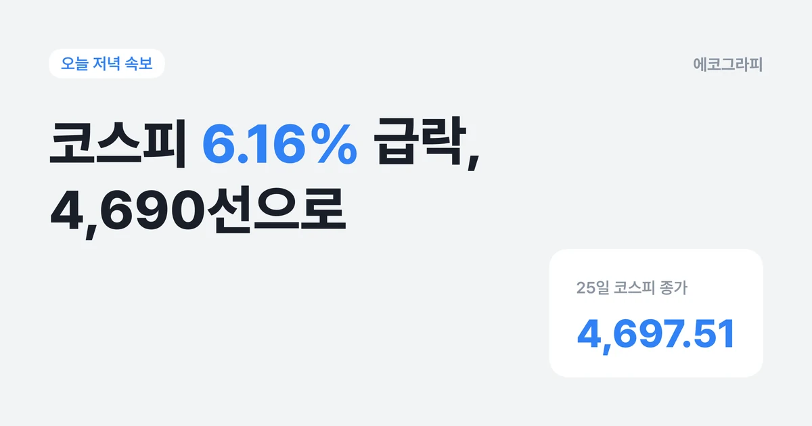
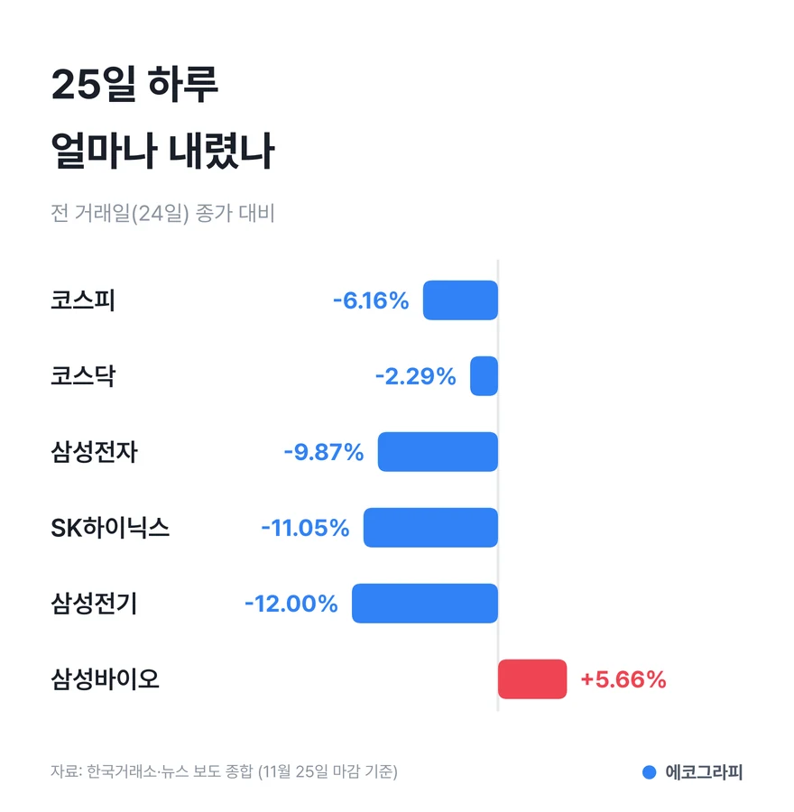
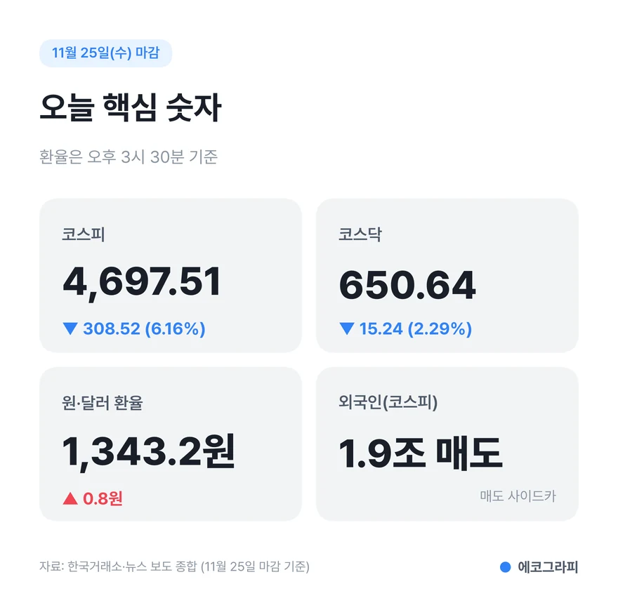

어제는 젠슨 황 CEO 복귀 소식에 엔비디아가 30% 넘게 뛰면서 우리 시장도 크게 올랐어요. 그런데 간밤 미국에서 분위기가 다시 바뀌었어요. 엔비디아가 5.86% 내렸고, 반도체 회사들을 묶은 필라델피아 반도체지수는 7.9% 빠졌어요. 나스닥도 1.5% 내렸어요.
여기에 한 해외 증권사가 미국 메모리 업체 마이크론의 투자 의견을 낮추면서 메모리 반도체가 너무 많이 만들어질 수 있다는 걱정이 커졌어요. 미국 정부가 과잉 생산 문제를 들어 한국을 포함한 나라들에 관세를 더 매길 수 있다는 소식도 부담이 됐어요.
코스피는 3.94% 내린 4,809.00으로 출발했고, 장 시작 8분쯤 코스피200 선물이 급락하면서 매도 사이드카가 발동됐어요. 올해 33번째 매도 사이드카라는 보도가 나왔어요. 이후에도 반등하지 못하고 장중 4,672선까지 밀렸다가 308.52포인트(6.16%) 내린 4,697.51에 마감했어요. 약 10개월 만의 가장 낮은 종가예요.


최근 나흘을 이어 보면 20일 -5.21%, 23일 -3.31%, 24일 +6.32%, 25일 -6.16%예요. 하루 걸러 5~6%씩 오르내리는, 아주 드문 흐름이 이어지고 있어요.
오늘 하락은 대부분 반도체 두 종목에서 나왔어요. 코스닥이 2%대로 덜 빠지고 바이오주가 오른 걸 보면, 시장 전체가 무너졌다기보다 코스피 안에서 비중이 큰 반도체가 크게 흔들린 하루에 가까워요.
그만큼 우리 지수가 미국 반도체 뉴스 한두 개에 크게 출렁인다는 뜻이기도 해요. 어제의 급등은 '엔비디아 경영진 소식'이라는 하나의 재료에 기댔고, 오늘은 그 재료가 다시 식으면서 상승분을 거의 다 돌려줬어요.
한 줄 정리: "미국 반도체지수 7.9% 급락 + 메모리 공급 과잉 걱정 + 관세 불확실성 → 삼성전자·SK하이닉스 급락 → 외국인 대량 매도"로 이어진 하루예요.
오늘 해볼 것: 내 계좌에서 반도체 비중이 얼마인지 확인해 보세요. 국내 대표 지수 ETF만 들고 있어도 삼성전자·SK하이닉스 비중이 꽤 커서, 반도체가 흔들리면 계좌 전체가 같이 흔들려요.
내일 아침 시황 글에서 이어서 정리할게요. 어제 급등은 24일 속보 글에서 볼 수 있어요.
아니요. 코스피200 선물이 5% 넘게 움직여 1분간 이어지면, 컴퓨터로 한꺼번에 내는 프로그램 매매 주문만 5분간 멈춰요. 일반 투자자의 주문은 그대로 돼요. 시장 전체 거래를 멈추는 건 서킷브레이커예요.
코스닥은 삼성전자·SK하이닉스 같은 대형 반도체주가 없고 바이오 종목 비중이 커요. 오늘은 반도체에서 빠진 돈이 바이오로 옮겨 가면서 코스닥 하락 폭이 상대적으로 작았어요.
메모리 반도체가 필요한 양보다 많이 만들어지면 가격이 내려가고, 만드는 회사의 이익도 줄어들 수 있어요. 삼성전자·SK하이닉스는 메모리 비중이 커서 이런 걱정에 특히 민감해요.
정답은 없어요. 다만 하루 5~6%씩 움직이는 시기에는 급하게 사고팔기보다, 내가 감당할 수 있는 손실 범위와 투자 기간을 먼저 정해 두는 게 도움이 돼요. 이 글은 매수·매도를 권하지 않아요.
※ 2026년 11월 기준으로 정리한 글입니다. 세율·제도는 바뀔 수 있으니 거래 전 증권사·국세청 안내를 한 번 더 확인하세요. 특정 종목·상품의 매수·매도 권유가 아닙니다.